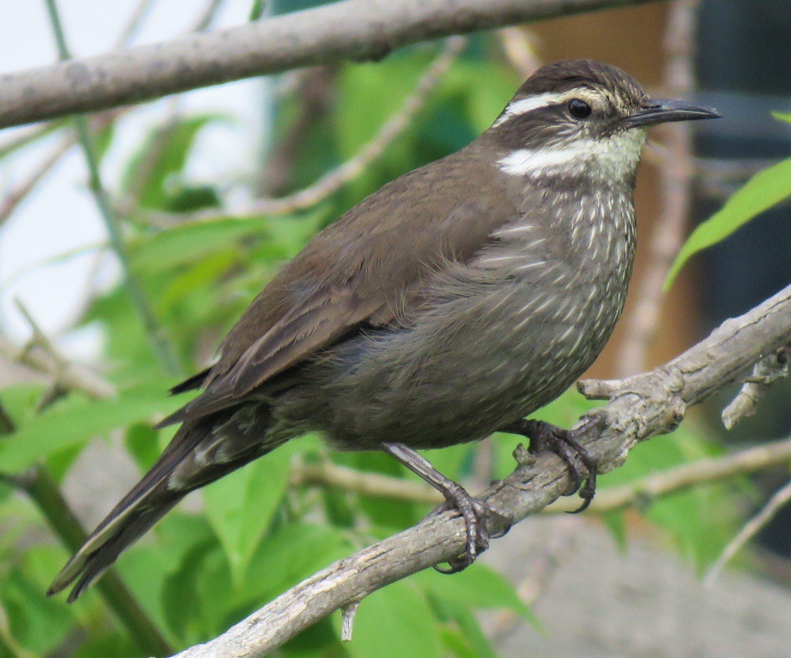

El peruano Churrete Real
Machu Pichu, la célebre ciudadela inca que data del 1400,
seguramente sobrevivirá, para bien de las futuras generaciones,
por los cuidados de los que es objeto por parte de los peruanos como
Patrimonio de la Humanidad. Es una de las nuevas Siete Maravillas del Mundo
Moderno y anualmente es visitada por miles de personas, que regresan a salvo a sus hogares.
Irónicamente,
quizá no sobreviva uno de sus visitantes ocasionales más hermosos, el Churrete Real (Cinclodes
patagonicus). Esta ave que vive en arboledas húmedas, cerca de Machu Pichu, está casi extinta, ya
que se cree que solo quedan menos de cien ejemplares. Una pena, particularmente en Perú,
el segundo país del mundo con mayor diversidad de aves.

El gringo y mexicano Cóndor de California
Los colonizadores estadounidenses conquistaron el Oeste del país casi
extinguiendo a un animal, el búfalo. La matanza indiscriminada del bisonte
americano para alimentar a civiles y ejércitos, casi termina con la especie.
De hecho, William Coddy ganó su legendario apodo de «Buffalo Bill» por
dedicarse a cazar búfalos para vender su carne. Las poblaciones fueron
recuperándose poco a poco y su supervivencia parece estar asegurada por su
crianza con fines comerciales. No ocurre lo mismo con el Cóndor de California (Gymnogyps
californianus),
especie que lleva el nombre de uno de los territorios que el búfalo ayudó a conquistar. Este cóndor,
que vive también en los estados norteamericanos de Nevada y Utah, y en el mexicano de
Baja California, llega a alcanzar 60 años, siendo una de las aves más longevas. También tiene mucha
importancia simbólica en
las culturas indígenas de esos territorios. Afortunadamente, una veintena de ejemplares fueron
capturados para intentar
un repoblamiento natural desde su reproducción en cautiverio.

La colombiana Guacamaya Bandera
En su famosa novela, El amor en los tiempos del cólera, el premio Nobel colombiano, Gabriel García
Márquez,
narra que uno de los personajes principales, el doctor Juvenal Urbino, tenía un loro que hablaba
español y francés,
enseñado por su dueño, que había estudiado Medicina en Francia. El loro era una atracción turística
por su bilingüismo y en una ocasión
en la que el Presidente de la República visitó Cartagena de Indias, principal escenario de la
novela,
Urbino quiso pavonearse con su loro intelectual frente al Jefe del Estado. Quedó avergonzado porque
el animal se negó a pronunciar palabra.
La Guacamaya Bandera (Ara macao) no habla francés, al menos en vida silvestre, pero imita muy bien
las voces que escucha a su alrededor.
Está en fuerte peligro de extinción porque es inmisericordemente cazada para vender sus bellas
plumas.
Latinoamérica es la región que más animales ha perdido en medio siglo
Las cifras no son nada alentadoras. Entre 1970 y 2014, el 60 % de las poblaciones de mamíferos, peces,
reptiles, entre otros,
se han reducido por efecto de la acción humana. Esta disminución es aún más dramática en Sudamérica y
América Central, regiones que han perdido hasta
el 89 % de las poblaciones de especies silvestres.
La sobreexplotación y la actividad agrícola, como consecuencia del consumo desbordado, son las
principales causas de esta preocupante desaparición de especies.
De acuerdo con el estudio, de 1040 poblaciones evaluadas en la región, que representan 689 especies,
las de vertebrados disminuyeron en promedio 4,8 % cada año. Este cambio ha sido el más brusco de todos
los espacios biogeográficos analizados.
AYUDANOS A SALVAR ESTOS ANIMALES, DONANDO A NUESTRA FUNDACION